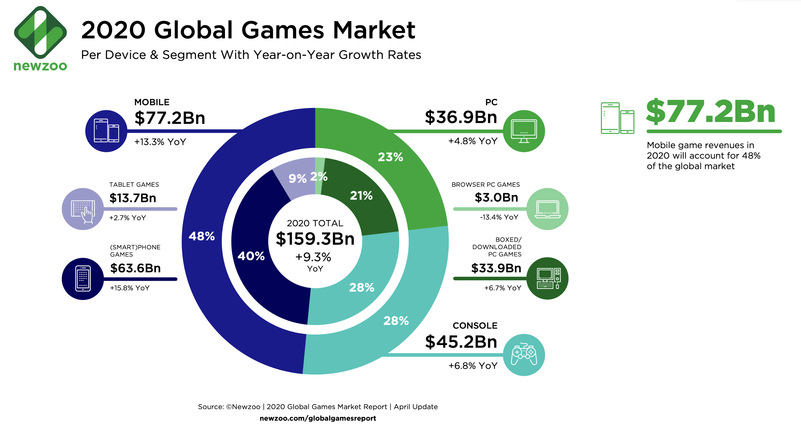
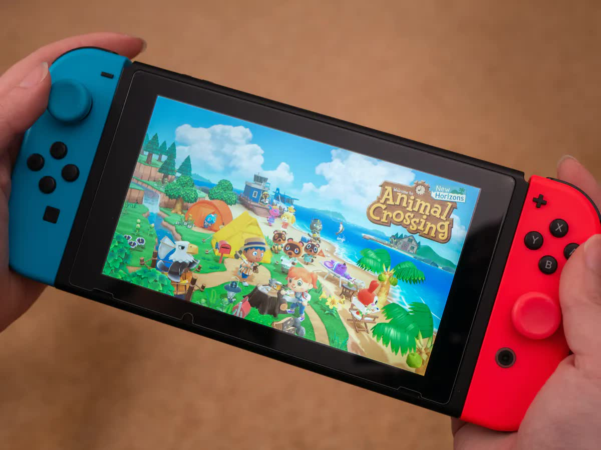

The Exponential Growth of Video Games due to the COVID-19 Pandemic
The Covid-19 Pandemic explosion of video games
COVID-19 saw video games explode in popularity as more people were forced to stay at home and keep themselves entertained. In 2020, $29.4 billion of video games have been sold in the US, with a 23% increase from the same time last year. 55 percent of people picked up video games out of boredom, to escape the real world, and to socialize, during the first phase of lockdowns, according to Nielsen company SuperData’s 2020 year in review.66 percent of consumers from 18 to 24 played more console games, while 60 percent played more mobile titles, according to super data. In April of 2020, Microsoft announced a service like Netflix for video games, which hit 10 million. Nintendo announced sales of its Switch console were up 24 percent year-over-year. At the same time, its new play, “Animal Crossing: New Horizons,” had sold 13.5 million copies since its release in late March. (1)(2)(3)
